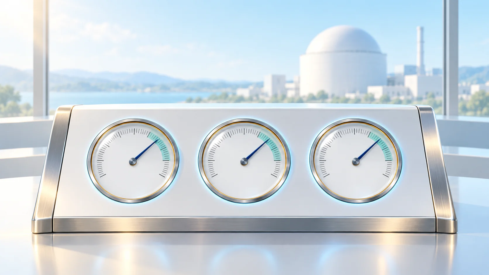
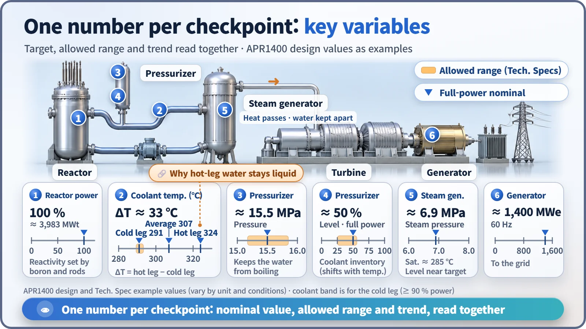
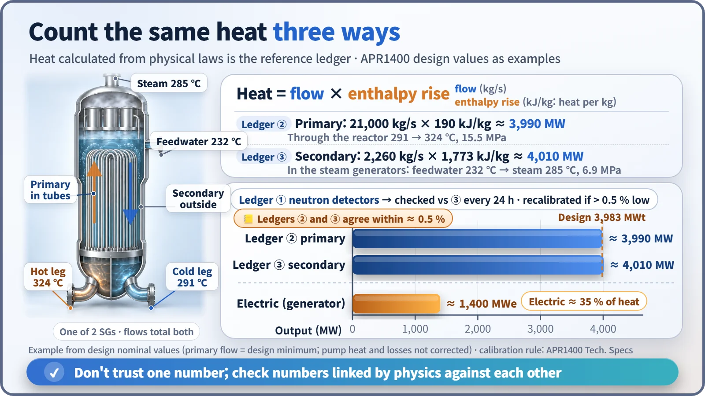

Plant Operation, Control & the Grid · 239
Balancing the Books — The Key Variables Control Room Operators Watch
About ten numbers along the path from reactor to grid, read together and checked against each other like the ledgers of a household budget.

Out of thousands of signals, control room operators keep their eyes on about ten key variables, one at each checkpoint where heat is made, carried, turned into steam and converted into electricity. Their real value comes from checking them against each other: the same reactor heat is counted three ways, and the heat balance from energy conservation is the reference. [1]
Balancing the books
Have you ever noticed something odd while balancing your budget at the end of the month? Your card app says you spent $320, but only $300 has left your bank account. You add up the receipts: $320. So the bank side simply hasn't caught up yet.
That little scene captures almost exactly how a nuclear power plant's control room works: count the same money in three different ledgers, and when the numbers disagree, find out which one is wrong. Here are the key variables control room operators watch, and why operators keep checking them against each other.
Thousands of instruments, only a handful of "always-on" numbers
Thousands of signals flow into a nuclear plant's main control room, but to size up the plant at a glance operators look at only about ten values. The key control room variables are the core measurements taken at each checkpoint along the path where heat is made, carried, handed to steam and turned into electricity. The other instruments help narrow down the cause when one of these numbers looks wrong.
Here is the path, using the design values of South Korea's APR1400 reactor as an example (they vary a little by unit and operating conditions). [1] [2]
| Checkpoint | Variable | Full-power value (APR1400 example) |
|---|---|---|
| Reactor | Reactor power (neutron detectors outside the reactor) | 100% ≈ 3,983 MW of heat |
| Primary coolant | Hot leg / cold leg / average temperature, ΔT | ≈ 324°C / ≈ 291°C / ≈ 307°C, ΔT ≈ 33°C |
| Pressurizer | Pressure; level | ≈ 15.5 MPa; about 50% |
| Steam generators | Steam pressure; level | ≈ 6.9 MPa; held steady when feedwater in balances steam out |
| Generator | Electrical output | ≈ 1,400 MW at 60 Hz |
| Reactivity tools | Boron concentration, control rod position | Rods mostly withdrawn; burnup offset by slow boron dilution |
The pressurizer's roughly 15.5 MPa is the force that keeps water from boiling even above 300°C, and its level tells you whether the right amount of primary coolant is in the system. Boron and rod position show what means the plant is using to hold its power.

Counting the same heat three times
A power plant has three "ledgers" too: three different ways of counting the heat the reactor produces.
The first ledger is the neutron detectors. They're fast and sensitive, but they're an indirect measurement that counts only the neutrons leaking out of the reactor, so their calibration slowly drifts over time.
The second and third ledgers are calculated from the laws of physics:
Thermal power = water flow (kg/s) × heat gained per kilogram (enthalpy rise)
Think of enthalpy as the heat energy carried by 1 kg of water. On the primary side, about 21,000 kg of coolant passes through the reactor every second, warming by 33°C and gaining about 190 kJ per kilogram: about 3,990 MW. On the secondary side, feedwater enters the steam generators at about 232°C and leaves as steam at about 285°C; about 2,260 kg per second picks up about 1,770 kJ per kilogram: about 4,010 MW. The two results differ by about 0.5%, and both land within 1% of the design thermal power of 3,983 MW (an example calculated from design values). [3]
The real rules work on exactly this principle. The APR1400 Technical Specifications require a secondary-side heat balance every 24 hours. If the neutron detector power or similar readings are more than 0.5% lower than that value, they are recalibrated to match the heat balance. The most trustworthy ledger, energy conservation, is the reference. [2]

Checking partners against each other
It isn't only heat that gets balanced. The key variables come in pairs that vouch for each other.
Steam flow and feedwater flow. Water has to come in as fast as steam goes out for the steam generator level to stay put. If the two disagree but the level is fine, the instruments are the first suspect.
Average temperature and pressurizer level. Water expands as it heats up, so the pressurizer level target isn't a fixed number but is set by the average temperature. If the temperature holds steady while only the level drops, operators check whether coolant is escaping somewhere.
Average temperature and turbine load. When the turbine takes more steam, the coolant cools more and the average temperature drops below its target. That gap shows which one is running ahead, the reactor or the turbine.
Control rod position and power. If the rods are deeper in than usual at the same power, the balance inside the core has changed.
Common mistakes about the numbers
"A normal value is one exact number." Most are targets that move with power, and normal means sitting inside an allowed band around that target. The APR1400's allowed range for pressurizer pressure is about 15.2–15.8 MPa, and for pressurizer level 25–56%. [2]
"100% reactor power means 100% electricity." Reactor power is heat (MWt) and generator output is electricity (MWe). About 1,400 MW of electricity comes from nearly 4,000 MW of heat, an efficiency of a little over 35%. If generator output holds steady while reactor power alone goes up, efficiency has dropped somewhere or an instrument has drifted.
"The number on the instrument is the truth." Instruments can be wrong. That's why operators check numbers linked by the laws of physics against each other instead of trusting a single reading.
Good operators listen to the numbers talk
The key control room variables measure the flow of energy from the reactor to the grid at each checkpoint along the way. Each one matters, but their real power comes from checking whether they agree. Just as three ledgers reveal money slipping out of a household budget, operators use interlocking numbers to notice small changes in the plant first. This careful cross-checking during normal operation is the first fence against accidents.